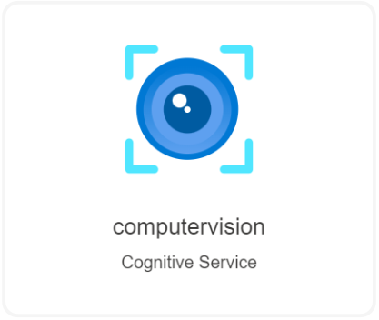

This template deploys a Cognitive Services Computer Vision API. This allows you to process visual data. Capabilities include image analytics, tagging, recognition celebrities, text extraction, and smart thumbnail generation.
In the outputs section it will show the Keys and the Endpoint.
| SKU | Transactions Per Second TPS | Features | Price |
|---|---|---|---|
| F0 | 20 per minute | 5,000 transactions free per month | |
| S1 | 10 TPS | Tag Face GetThumbnail Color Image Type GetAreaOfInterest |
0-1M transactions — $1 per 1,000 transactions 1M-5M transactions — $0.80 per 1,000 transactions 5M-10M transactions — $0.65 per 1,000 transactions 10M-100M transactions — $0.65 per 1,000 transactions 100M+ transactions — $0.65 per 1,000 transactions |
| OCR Adult Celebrity Landmark Detect, Objects Brand |
0-1M transactions — $1.50 per 1,000 transactions 1M-5M transactions — $1 per 1,000 transactions 5M-10M transactions — $0.65 per 1,000 transactions 10M-100M transactions — $0.65 per 1,000 transactions 100M+ transactions — $0.65 per 1,000 transactions |
||
| Describe+ Recognize Text * Read |
$2.50 per 1,000 transactions | ||
| $45,000/month Up to 10B chars per month Overage: $4.50 per million chars |